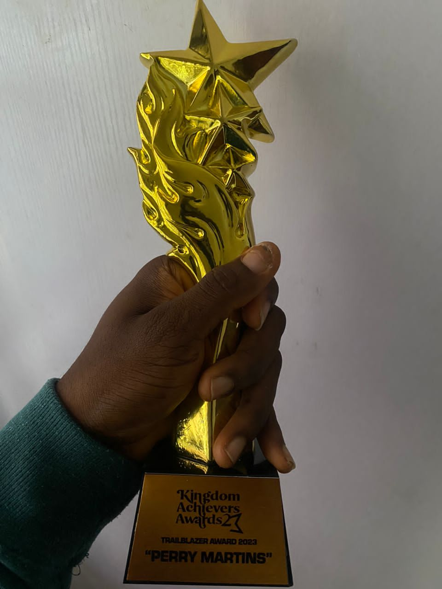

Recognition
Awards, fellowships, memberships and leadership roles held by Martins Okonkwo (Perry Martins).
Awards

2023
Trailblazer Award
Kingdom Achievers Awards — for his work with Gospotainment.
Fellowships & Memberships
- —Alumnus, Tony Elumelu Entrepreneurship Foundation (TEF)
- —Alumnus, Young African Leaders Initiative (YALI) West Africa
- —Member, Thomson Foundation
Leadership
- —Founder and First President, International Association of Christian Media Practitioners (IACMP), Nigeria — a non‑profit association for Christian media practitioners